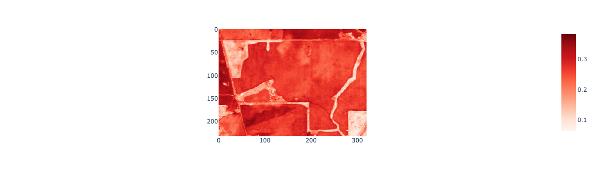
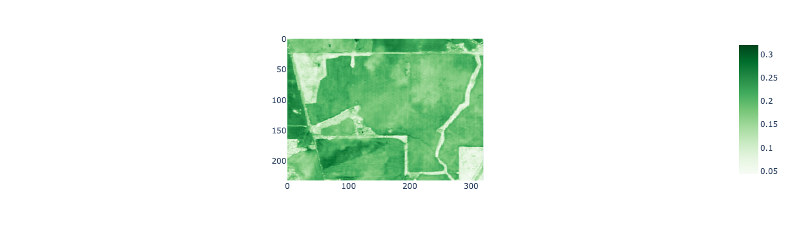
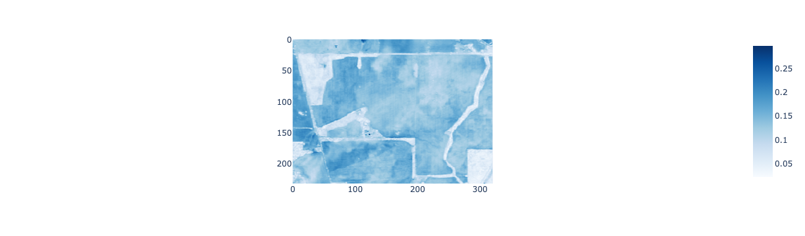

Data analysis tasks involve reading data stored in files on disks, servers in the cloud, or recorded by sensors. Also, we need to save the results of our analysis or datasets we have generated to files.
Task
In this lab we will write a program that can convert crop yield data collected from a harvester into a geospatial data structure for vector data and write this data to disk using a geospatial file format. You will also write a program that can read geospatial image (raster) data from files into array objects that can be analysed in Python programs.
This lab will introduce:
geospatial data file formats
techniques for reading and writing from geospatial data from and to files
Python data structures for representing vector data (GeoDataFrame objects)
Python data structures for representing raster data (NumPy ndarray objects)
Setup
Run the labs
You can run the labs locally on your machine or you can use cloud environments provided by Google Colab. If you’re working with Google Colab be aware that your sessions are temporary and you’ll need to take care to save, backup, and download your work.
Download data
If you need to download the date for this lab, run the following code snippet.
import pandas as pdimport geopandas as gpdimport numpy as npimport matplotlib.pyplot as pltimport rasterioimport jsonimport osimport foliumimport plotly.express as pximport plotly.io as pioimport pprint# setup rendererif'google.colab'instr(get_ipython()): pio.renderers.default ="colab"else: pio.renderers.default ="jupyterlab"
Geospatial data
Geospatial data is used to take geographic features or phenomenon and represent them as data in computer program or file.
There are two main types of geospatial data:
vector data - point, line, or polygon geometries
raster data - images and arrays
There are two components to geospatial data:
Positional information describing location, shape, and extent (e.g. an (x, y) coordinate pair representing the location of a weather station).
Attribute information describing characteristics of the phenomenon or entity (e.g. a name:value pair recording the name of the weather station name:'Perth Airport').
Raster data model
Raster data breaks the Earth’s surface up into a grid of cells (pixels). Each pixel is assigned a value that corresponds to the geographic feature or phenomenon of interest. For example, pixels in a raster precipitation dataset would be assigned a numeric value that represents the amount of precipitation that fell at that location. Pixels in a land cover map would have an integer value that corresponds to a particular land cover class label. The values assigned to pixels in a raster dataset are the attribute information.
The size of the pixels relative to their position on the Earth’s surface determines the spatial detail that can be resolved in the raster dataset. A land cover map with pixels that represent a 1 km x 1 km portion of the Earth’s surface will not be able to identify features such as individual buildings.
Vector data model
Vector data uses point, line, or polygon geometries to represent geographic features.
Coordinate pairs: point locations or the vertices in lines and polygons are represented using coordinate pairs. The coordinate pairs indicate where that feature is located on the Earth’s surface (relative to an origin); longitude and latitute are commonly used as coordinate pairs.
Attribute information: vector data also stores non-spatial attribute information which describe characteristics of the geographic phenomenon or entity represented by the geometry feature.
GeoPandas GeoDataFrame
A GeoPandas GeoDataFrame is a tabular data structure for storing vector geospatial data and is based on a regular pandas DataFrame.
A GeoDataFrame consists of columns of non-spatial attributes similar to a pandas DataFrame. However, a GeoDataFrame also has a geometry column which is a GeoSeries of geometries for the spatial data associated with each row.
In Python, geometries are represented as ShapelyGeometry objects. The geometry column in a GeoPandas GeoDataFrame is a Series of Shapely Geometry objects. Printing a ShapelyGeometry object returns a Well Known Text (WKT) string description of the geometry (e.g. POINT (0, 1)). The geometry column of a GeoDataFrame (or a GeoSeries) can be viewed as a sequence of Shapely Geometry objects:
a_geoseries = [POINT (0, 1), POINT (0, 2), POINT (2, 3)]
Shapely provides tools for representing geometries in Python programs. It does not provide tools for reading geometry data from disk or handling attribute data. GeoPandas GeoDataFrame and GeoSeries combine Shapely’s functionality for handling geometries with tools for reading and writing vector data, handling attributes, and visualisation. Therefore, we will focus on using GeoDataFrames in these labs.
Let’s convert a CSV file with longitude, latitude, and elevation columns into a GeoDataFrame. First, let’s read the CSV file in as a pandas DataFrame.
Now, let’s use the longtitude and latitude columns in the DataFrame to convert the elevation data into a GeoPandas GeoDataFrame.
# Convert the elevation data to a spatial formatpoints = gpd.points_from_xy(elev_df["Lon"], elev_df["Lat"], crs="EPSG:4326")print(f"points is of type {type(points)}")elev_gdf = gpd.GeoDataFrame(elev_df, geometry=points)print(f"elev_gdf is of type {type(elev_gdf)}")elev_gdf.head()
points is of type <class 'geopandas.array.GeometryArray'>
elev_gdf is of type <class 'geopandas.geodataframe.GeoDataFrame'>
Northing
Easting
Lat
Lon
Elevation
geometry
0
6503882.129
545428.0052
-31.599262
117.478873
268.920
POINT (117.47887 -31.59926)
1
6503806.024
545427.6719
-31.599948
117.478873
265.908
POINT (117.47887 -31.59995)
2
6503881.794
545504.4826
-31.599262
117.479680
268.171
POINT (117.47968 -31.59926)
3
6503805.688
545504.1488
-31.599948
117.479680
265.413
POINT (117.47968 -31.59995)
4
6503729.582
545503.8149
-31.600635
117.479680
263.080
POINT (117.47968 -31.60064)
Recap quiz
You will need to refer to the GeoPandas documentation to answer these questions.
What does executing the GeoDataFrame method points_from_xy() return?points_from_xy() expects a pandas Series objects for x and y coordinates and coordinate reference system. It will return to a GeoPandas GeometryArray object which stores a POINT geometry object for each x and y pair and can be converted into a GeoSeries object.
The GeoDataFrame() constructor function can take three arguments. What are these arguments and how do they enable the creation of a GeoDataFrame object?
The GeoDataFrame() constructor function requires a pandas DataFrame as its first argument. This data is the non-spatial attributes. The second (optional) argument is a GeoPandas object which stores geometry objects associated with each row (this could also be a string denoting the column of a DataFrame storing geometries. The third (optional) argument is a crs denoting the coordinate reference system for the geometry data.
GeoJSON
So far we have been reading and writing non-spatial tabular data. Parquet and CSV files are well suited for storing tabular data.
However, there are different ways of structuring data, some datasets don’t lend themselves to tabular structures, and there are different uses of data files than storage on disk.
JSON data (JavaScript Object Notation for its full name) is a widely used format for data interchange (exchanging data between programs, computers, clients, and servers).
JSON represents data as key:value pairs enclosed within curly brackets {} (you might notice the similarity with Python’s dictionary data structure).
The values in JSON data can include text (strings), numbers, arrays (lists), and nested JSON objects. Like the CSV format, JSON is a text based format where human readable characters are encoded in binary using UTF-8 or UTF-16.
GeoJSON is an extension of the JSON format for storing and exchanging spatial data. One of GeoJSON’s uses is sending spatial data to web browsers to render as layers on web maps.
GeoJSON represents geographic features as vector data (points, lines, and polygon geometries) and can also store non-spatial attribute information.
Spatial data in GeoJSON are represented using geometry types which include:
Let’s get the first two rows of the GeoDataFrame and convert them to GeoJSON format. GeoDataFrames have a to_json() method which can be used to convert the data in the GeoDataFrame into a string object in GeoJSON format.
# Get the first two rows of the elevation GeoDataFrame and convert to GeoJSONelev_gdf_2 = elev_gdf.iloc[0:2, :]elev_gdf_2
Northing
Easting
Lat
Lon
Elevation
geometry
0
6503882.129
545428.0052
-31.599262
117.478873
268.920
POINT (117.47887 -31.59926)
1
6503806.024
545427.6719
-31.599948
117.478873
265.908
POINT (117.47887 -31.59995)
elev_geojson_2 = elev_gdf_2.to_json()print(f"The GeoJSON data is stored as a {type(elev_geojson_2)} type object")print("")pprint.pprint(elev_geojson_2)
In Python, the GeoJSON data that we have generated from our GeoDataFrame is stored as a string object. GeoJSON (and JSON) is a text-based data similar to CSV files. However, unlike the CSV format where data has a tabular structure with records arranged by row the GeoJSON data is based around nested objects of key:value pairs.
As we have subsetted the first two rows of our GeoDataFrame and converted them to GeoJSON we have generated a FeatureCollection object with two Features.
Each row in the GeoDataFrame is converted to a Feature and each Feature has the column values per row stored in a properties object - these are the non-spatial attributes associated with each Point feature. The spatial information is stored in a geometry object which contains two key:value pairs. The value associated with the type key tells us this is a Point geometry and the array value associated with coordinates key defines the location.
Compare the tabular display of the GeoDataFrame to the print of the GeoJSON to see how the non-spatial and spatial information in the table structure is converted to the GeoJSON nested format.
We can save a GeoDataFrame to GeoJSON using the GeoDataFrame’s to_file() method and setting the driver argument to GeoJSON.
# Save the elevation GeoDataFrame to a GeoJSON fileelev_gdf.to_file(os.path.join(os.getcwd(), "week-2", "week-2-bf66-elevation.geojson"), driver="GeoJSON")
Check the GeoJSON file has saved to the directory specified. As it is text data, if you click on it you should be able to inspect its format in a text editor.
Recap quiz
Identify two differences between the GeoJSON file format and a GeoPandas GeoDataFrame
A GeoDataFrame is used to store geospatial data in memory for Python programs. A GeoJSON file format describes how geospatial data should be encoded when it is stored on disk.
A GeoDataFrame uses a tabular structure to organise non-spatial and spatial attributes with each row corresponding to a feature. GeoJSON format uses dictionary-like structure of key:value pairs with geographic data (coordinates) stored as values with a geometry key and attribute data stored as values with a properties key.
You saved the elevation data to a GeoJSON file at this path: os.path.join(os.getcwd(), "week-2", "week-2-bf66-elevation.geojson").
Head to the GeoPandas documentation and look up how to read files into GeoDataFrame objects. Read the elevation.geojson file into a GeoDataFrame referenced by the variable elev_from_file.
We have demonstrated how we can read and write tabular data and vector geospatial data from and to files. However, many geospatial datasets are based on the raster data model where values are assigned to pixels and pixels represent locations on the Earth’s surface.
A common source of raster data are remote sensing images captured by sensors on uncrewed aerial vehicles, aircraft, or satellites. Optical remote sensing images store the measured reflectance of light off the Earth’s land surface in different wavelenghts. Raster remote sensing images are often stored using the GeoTIFF format.
A GeoTIFF file is based on the Tagged Image File Format (or .tiff file) which is a general format for storing image data. A TIFF file comprises:
a TIFF header which includes 8 bytes that tell us that the file is in TIFF format and where in the file (what byte number / byte offset from 0) the first Image File Directory is stored.
Image File Directories which contains image metadata, a pointer to where the image data is in the file (what byte number / byte offset from 0), and the location of the next Image File Directory if there is more than one image stored in the TIFF file. Metadata is stored as fields which comprise a TIFF tag and it’s corresponding value.
Image Data - the values associated with each pixel in the image. A single TIFF file can store multiple images.
GeoTIFF files include extra information (metadata) as tags which describe the coordinate reference system (CRS) of the image data (i.e. where on the Earth’s surface the image data corresponds to), spatial resolution, no data values, and various other configurations described here.
GeoTIFF files can store multiple images (i.e. raster layers) in a single file. This makes them well suited for storing remote sensing image data where each raster layer corresponds to measured reflectance in a particular wavelength.
We can use the functions provided by the rasterio package to read and write raster data in Python.
We can use rasterio to create a file connection to raster data stored in a GeoTIFF file and use this file connection object to read the raster data into a Python data structure. Rasterio reads raster data from GeoTIFF files on disk into NumPy ndarrays in memory.
The GeoTIFF file week-2-s2-summer-2020.tif stores remote sensing data covering the same field that the elevation and canola yield data were collected from. The remote sensing data was captured by the European Space Agency’s Sentinel-2 satellite (10 m spatial resolution).
We use the with statement and context managers to open() connections to GeoTIFF files to read() raster data from them using rasterio. As we’re using a context manager to handle connections to the file we don’t need to call close() on the file connection object.
# path the the GeoTIFF files2_path = os.path.join(os.getcwd(), "week-2", "week-2-s2-summer-2020.tif")# open the GeoTIFF file and read its metadata and image datawith rasterio.open(s2_path) as src: meta = src.meta rgb = src.read([4, 3, 2]) red_band = src.read(4) green_band = src.read(3) blue_band = src.read(2)
The file object src is the connection to the GeoTIFF file and it has a meta property. The meta property stores metadata that describes the raster data in the GeoTIFF file. Let’s explore this metadata.
The count property of the meta object is the number of bands or raster layers in the GeoTIFF file:
print(f"number of bands: {meta['count']}")
number of bands: 23
And, we can see the coordinate reference system of the raster data:
print(meta["crs"])
EPSG:4326
NumPy ndarrays
Calling the read() method of the file connection object to the GeoTIFF file reads the raster data into a NumPy ndarray object. We can specify a number as an argument to the read() method to indicate which raster bands we want to read from the GeoTIFF file. For example, read(2) will read the second band. If we specify a list of numbers we will read several bands into a multidimensional ndarray object.
NumPy is a library used for scientific and numerical computing and is based around an N-dimensional ndarray object. An ndarray is a grid of elements of the same data type. The dimensions of a NumPy ndarray are called axes. NumPy arrays can be created from sequences of values (e.g. stored in lists, tuples, other ndarrays).
We can create a simple 1-dimensional ndarray using the array() function.
# create a 1D ndarrayarr1d = np.array([1, 2, 3])arr1d
array([1, 2, 3])
The rank (or number of dimensions) of a ndarray is the number of axes.
# the rank (ndim) of an ndarry is the number of axes print(f"the rank of the ndarray is {arr1d.ndim}")
the rank of the ndarray is 1
The shape of an ndarray tells us the size of each axis (how many elements are arranged along that axis).
# the shape of the ndarray print(f"the shape of the ndarray is {arr1d.shape}")
the shape of the ndarray is (3,)
A ndarray with 2-dimensions is a matrix with rows arranged on the 0 axis and columns arranged on the 1 axis.
The ndarray pointed to by arr2d is a 2 x 3 matrix of numeric values. We can check this.
print(f"the rank of the ndarray is {arr2d.ndim}")print(f"the shape of the ndarray is {arr2d.shape}")
the rank of the ndarray is 2
the shape of the ndarray is (2, 3)
ndarrays can be multidimensional. They can have more than two dimensions. Remote sensing images typically comprise multiple 2-dimensional arrays with each array corresponding to a raster of reflectance measured in a particular wavelength. This 3-dimensional raster data structure can be represented as a NumPy ndarray with the bands dimension on axis 0 (each band is a raster for a given wavelength), rows (height of each raster) on axis 1, and columns (width of each raster) on axis 2.
Let’s create a ndarray with 3-dimensions.
# create a 3D ndarrayarr3d = np.array([[[1, 2, 3], [4, 5, 6]], [[7, 8, 9], [10, 11, 12]]])arr3d
print(f"the rank of the ndarray is {arr3d.ndim}")print(f"the shape of the ndarray is {arr3d.shape}")
the rank of the ndarray is 3
the shape of the ndarray is (2, 2, 3)
The concept of N-dimensional arrays can be extended further. For example, a 4-dimensional ndarray could store a sequence of 3-dimensional ndarrays where the fourth dimension is time and the object represents remote sensing images captured across multiple dates.
Recap quiz
Execute the following code to read in a normalised difference vegetation index (NDVI) layer computed for the same field from a GeoTIFF file and use this data to answer the following questions.
# path to the ndvi files2_ndvi_path = os.path.join(os.getcwd(), "week-2", "week-2-ndvi-summer-2020.tif")# open the GeoTIFF file and read its metadata and image datawith rasterio.open(s2_ndvi_path) as src: meta = src.meta ndvi = src.read(1)
What is the name of the variable that points to the metadata for the NDVI data read from the GeoTIFF file?meta
Find out what type of object the data referenced by meta is?
## add code here ##
answer
print(type(meta))
Find out what type of object the data referenced by ndvi is?
## add code here ##
answer
print(type(ndvi))
Use the meta object to identify how many bands the raster data stored in the GeoTIFF week-2-ndvi-summer-2020.tif has?
## add code here ##
answer
print(f"There are {meta['count']} bands in the GeoTIFF file")
Find out how many raster bands have been read into the ndarray object referenced by ndvi?
## add code here ##
answer
One band has been read into the ndarray object pointed to by ndvi. This is a rank 2 ndarray with row and columns axes and no bands axis.
print(f"the rank of the ndvi ndarray is {ndvi.ndim}")print(f"the shape of the ndvi ndarray is {ndvi.shape}")
Do meta[“count”] and the length of the bands axis of the ndarray object generated by a call to read() have to return the same value?
Not always. In this case they should return the same value as we are reading the one and only band stored in week-2-ndvi-summer-2020.tif in an ndarray object. However, the value at meta[“count”] will tell us the number of bands in the file while the number of bands stored in the ndarray resulting from a call to read() is determined by the number passed into read().
Visualising raster data
We can use the imshow() function from the Plotly Express package to render data in NumPy ndarrays as an image. The imshow() function expects a NumPy ndarray of raster values to display and a colour map (color_continuous_scale) that relates raster pixel values to a colour on the computer screen.
# Plot the red bandpx.imshow(red_band, color_continuous_scale="Reds")

# Plot the green bandpx.imshow(green_band, color_continuous_scale="Greens")

# Plot the Blue bandpx.imshow(blue_band, color_continuous_scale="Blues")

Recap quiz
Earlier we read NDVI data for this field into a ndarray object referenced by ndvi. Visualise this data using the imshow() function and select a suitable colour scale from the Plotly Expess built-in options. NDVI values range from -1 to 1 with higher values associated with greener vegetation.
## add code here ##
answer
px.imshow(ndvi, color_continuous_scale="viridis")
Colour
A particular colour is defined by the intensity of light in different parts of the visible spectrum (e.g. yellow is a mixture of light in red and green wavelengths).
Colour is represented by combinations (addition) of red, green, and blue light. Red, green, and blue are primary colours and combine to form white. An absence of red, green, and blue is black. Secondary colours can be formed by the addition of primary colours of varying intensities (e.g. yellow is the addition of red and green, magenta is the addition of red and blue, and cyan is the addition of green and blue).
Computer displays consist of red, green, and blue sub-pixels, which when activated with different intensities, are perceived as different colours. The range of colours that can be displayed on a computer display is called the gamut. Colour in computer programs is represented as a three byte hexadecimal number with byte 1 corresponding to red, byte 2 corresponding to green, and byte 3 corresponding to blue. Each byte can take the range of 0 to 255 in decimal. 0 indicates the absence of a colour and 255 indicates saturation of that colour:
white: 255 255 255
black: 0 0 0
red: 255 0 0
green: 0 255 00
blue: 0 0 255
Additive and subtractive colour models (source: CRCSI (2017))
Computer displays represent colour through varying the intensity of sub-pixel displays of red, green, and blue light. Variability in data values in multiband rasters can be visualised by relating data values in one band to the intensity of one of the primary colours on the computer display. Visualising a multiband raster in this way creates an additive RGB or colour composite image - it is called a composite image because each pixel is a composite of red, green, and blue light.
Above we rendered the red, green, and blue band reflectance from the Sentinel-2 image separately. However, if we combine these reflectance measures into a composite image (e.g. where red reflectance is represented by sub-pixel intensity of red light) we can create a true colour image as if we were looking down on the Earth’s surface with our eyes.
The imshow() function can take a multiband NumPy ndarray and returns an RGB image.
Above, we read() bands 4, 3, and 2 from the GeoTIFF file into NumPy ndarray referenced by rgb. Band 4 corresponds to red reflectance in Sentinel-2 images, band 3 corresponds to green reflectance, and band 2 corresponds to blue reflectance. We can pass rgb into the imshow() function to generate an RGB image of the field.
We can check that rgb has three bands by printing its shape property.
print(f"The shape of rgb is {rgb.shape}")
The shape of rgb is (3, 232, 321)
If we check the imshow()docs we can see that it expects a NumPy ndarray where the bands (or channels as they are sometimes called with images) is the final axis. NumPy has a moveaxis() function where can move the bands dimension to the last axis position before plotting.
# Plot the RGB imagepx.imshow(np.moveaxis(rgb, 0, 2), contrast_rescaling="minmax")
Recap quiz
At the file path noted below is a GeoTIFF file storing a normalised difference water index (NDWI) layer. Write a short program to read this raster data, identify the dimensions of the raster data, and visualise the data
File path to NDWI data: os.path.join(os.getcwd(), "week-2", "week-2-ndwi-summer-2020.tif")
## add code here ##
answer
s2_ndwi_path = os.path.join(os.getcwd(), "week-2", "week-2-ndwi-summer-2020.tif")with rasterio.open(s2_ndwi_path) as src: meta = src.meta ndwi = src.read(1)print(f"the width of the raster layer is {meta['width']}")print(f"the height of the raster layer is {meta['height']}")print(f"the number of bands in the raster layer is {meta['count']}")px.imshow(ndwi, color_continuous_scale="YlGn")